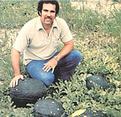

The Seasons Of The Garden
May/June 1985
MAY JUNE
Winter's cold is long past, early spring showers have moistened the soil, and sunny days grace the garden. This is nature's most exciting time, as miracles of germination and growth occur daily. Let growing concerns cast care aside!
Seed-Savers Alert
by Peter Hemingson
If you're interested in the preservation of heritage varieties of vegetables, mark the dates October 4-6 on your calendar, because on that long weekend the National Association for Gardening will hold a conference on the topic at the Missouri Botanical Garden in St. Louis. According to the February issue of Gardens for All (the association's monthly magazine, available with membership for $15 a year), the purposes of the conference are twofold: to help improve our understanding of how to locate and save seeds of heirloom varieties, and to help dramatize the necessity for preserving genetically diverse seed stocks. To receive additional information about the conference, write to Kit Anderson at Gardens for All, 180 Flynn Ave., Burlington, VT 05401. To join the association, send $15 to GFA Member Subscription Service, Depot Square, Peterborough, NH 03458. And if you want access to sources of heirloom varieties, be sure to join Kent Whealy's Seed Savers Exchange (203 Rural Ave., Decorah, IA 52101; $10 a year . . . and well worth it!).
GARDEN COMPETITIONS
Let's assume you've already entered your 1985 garden design in MOTHER'S contest for the best individual or family-size food garden (see page 93 in MOTHER N0. 92 for the announcement and page 5 in this issue for an update). What's that? You've got more to share? A community garden? Well, you're in luck: There's still time to enter your community garden in the American Community Gardening Association/Glad Wrap contest. The grand prize is $1,500. . .and that'll buy a lot of seeds! Information about the competition is available from AC GA, P.O. Box 93147, Milwaukee, WI 53202 - but hurry: Entries close on June 1. The winning gardens will be announced at the annual meeting of the ACGA, to be held in New York City, October 13-18. (If, by the way, you're a professional community-garden-program leader, you might want to consider affiliating with the association. Call John Royal or Steve Brackman for details at 414/224-4854. Information on the annual meeting agenda is available from Tom Fox, Neighborhood Open Space Coalition, 72 Reade St., New York, NY 10007, 212/513 - 7555.)
SALADS ALL SUMMER
Like most MOTHER readers, I know that the secret to summer-long salad makings is succession planting, but all too often I've found that knowledge and practice donor coincide, particularly when I've had trouble ferreting out bolt-resistant lettuce varieties to raise during the hotter months. Help, however, is at hand. I've just received a catalog from The Cook's Garden (P.O. Box 65060, Londonderry, VT 05148) that's stuffed with salad makers, including 30 kinds of lettuce . . .with five that are ideal for hot weather. There's Craquerelle du Midi, a Buttercrunch type that also stands up to frost . . . Kinemontpas, another butterhead imported from France . . . Little Gem, a semi-cos variety . . . Ballon, a French romaine . . . and to add a little color to our lives, there's Continuity, a butterhead with purplish red leaves. And looking ahead, the catalog lists six varieties for overwintering. Ellen and Shepherd Ogden started their seed business as a spin-off from their market-gardening operation, so you know the seeds have been tested and the descriptions of the plants are accurate. Bon appétit !
TOMATOES OF NOTE
Single-season gardeners may have their tomato seedlings well under way, but our southern friends can look forward to a fall crop of succulent 'maters, too. One seed catalog that's new this year comes free from Tomato Growers Supply Company (P.O. Box 2237, Ft. Myers, FL 33902), which features 112 different varieties - everything from old-timers such as Oxheart and nonhybrid Rutgers to such All-America selections as Celebrity.
Finally (and improbable as it may seem), a small Canadian seed house may have something of interest to gardeners in the Deep South: Siberia, a tomato that actually sets fruit in temperatures as chilly as 38°! If you're in the South, consider Siberia as a winter crop. If you live in the North, flag this for trial next spring for extra-early tomatoes. A 25-seed packet is $1.50 (U.S. funds) from Siberia Seeds, Box 3000, Olds, Alta., Canada T0M 1P0.
 Kent Whealy and heirloom 'Moon and Stars' watermelons. |
 |
|